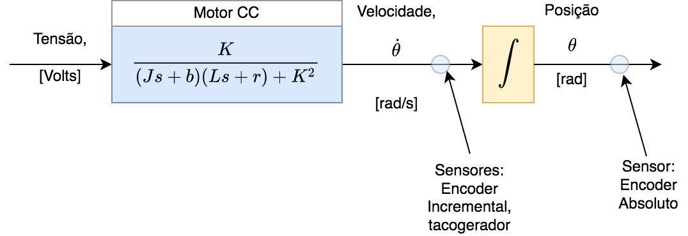
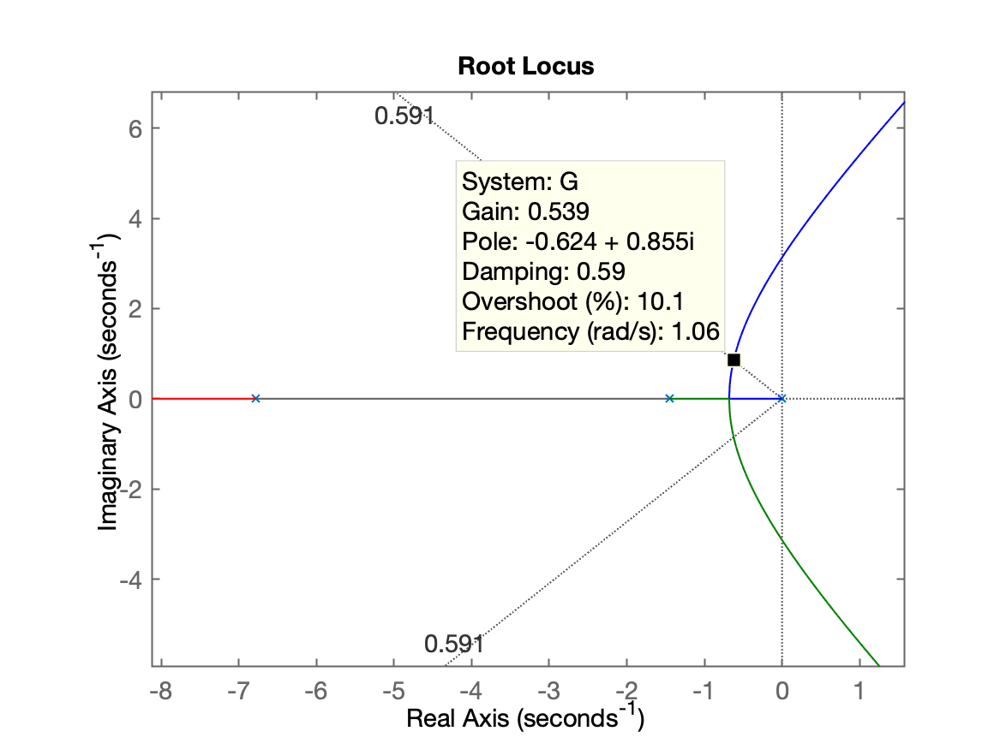
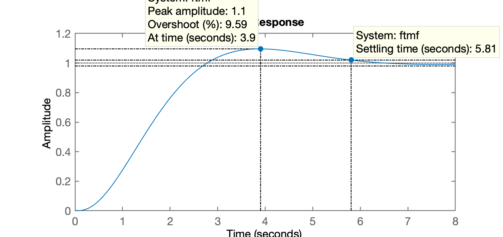
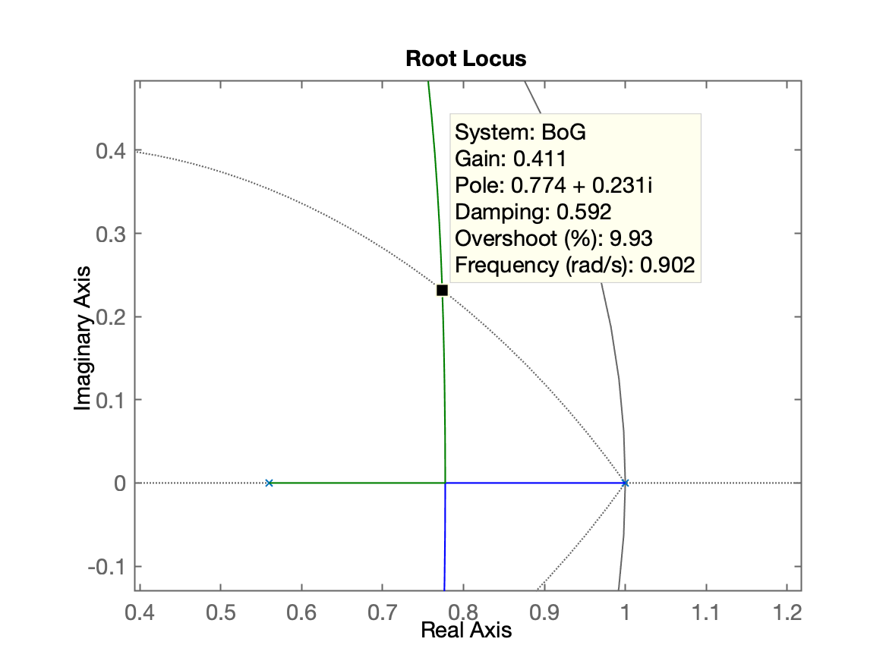
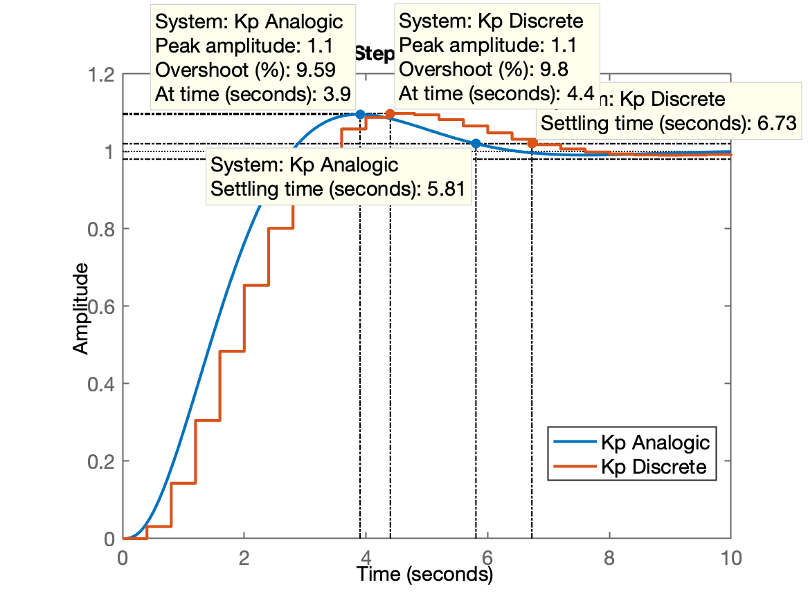
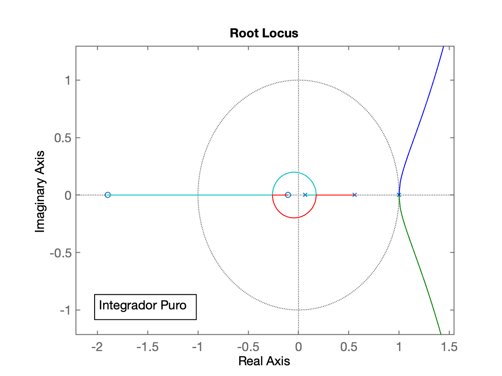
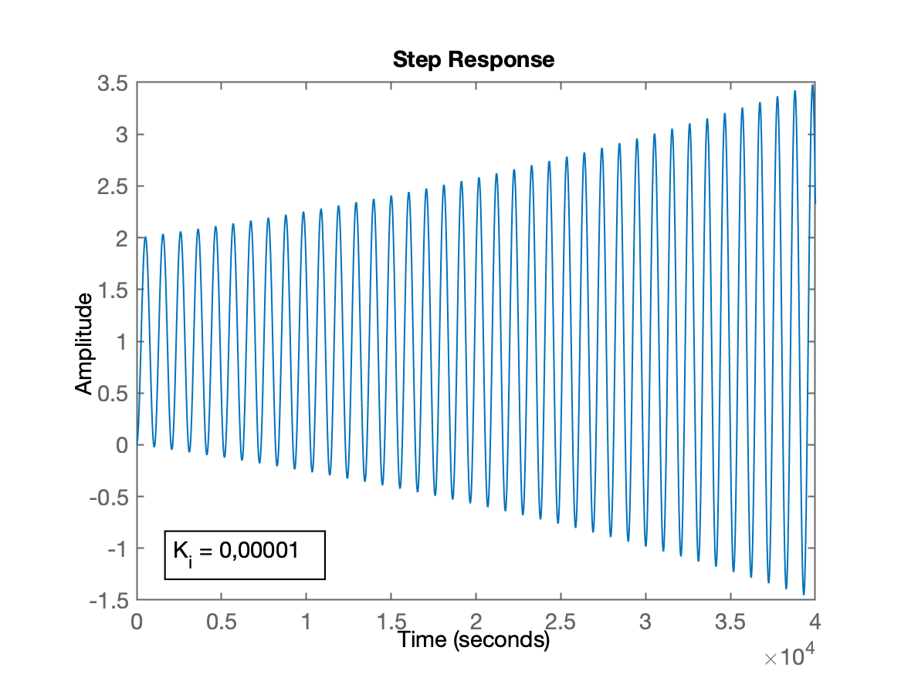
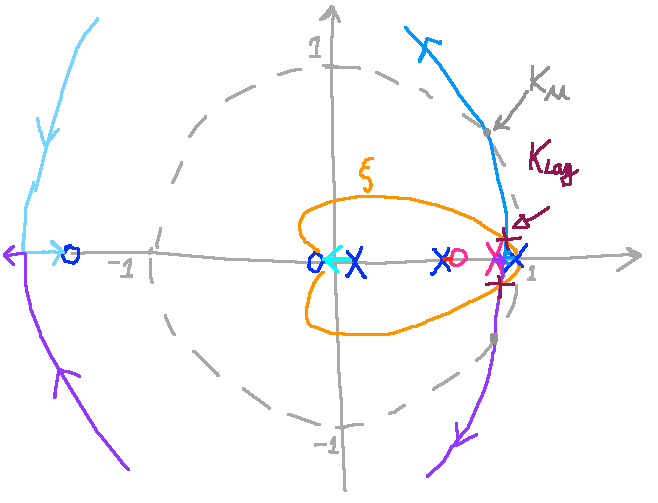

Sistema tipo 1
É possível acrescentar + Integradores?
O objetivo desta aula (material) é demonstrar se é possível acrescentar mais ação integral num sistema que já possui 1 integrador (um sistema do tipo 1).
Vamos trabalhar com a seguinte planta:
Com excessão do integrador, os 2 pólos reais deste sistema podem estar se referindo à modelagem de velocidade de um motor CC, ou seja, estabelecendo uma relação como que velocidade o motor desenvolve conforme a tensão DC aplicada nas suas bobinas, ou:
Na forma de um diagrama em blocos (criado com Draw.io):

O integrador presente na primeira equação pode estar relacionado com uma integração realizada à partir de um sensor de velocidade (um encoder incremental). Lembrando que integrar velocidade, resulta em posição e então neste caso,
Note que um encoder incremental é muito mais barato que o encoder absoluto que forneceria diretamente a posição angular porém é bem caro.
Mais informações associadas com modelagem de velocidade de motor CC podem ser obtidas à partir de: Control Tutorial for Matlab & Simulink (Michigan/Carnegie Mellon/Detroit Mercy): DC Motor Speed: System Modeling.
Entrando com os dados acima no Matlab e analisando este sistema, teremos:
>> diary aula_07out2021.txt % criando um arquivo texto refletindo comandos adotados >> G = tf (14.5, poly([0 -1.45 -6.78]));>> zpk(G) 14.5 ------------------- s (s+6.78) (s+1.45) Continuous-time zero/pole/gain model.
>> rlocus(G) % RL ainda no plano-s>> OS=10;>> zeta=(-log(OS/100))/(sqrt(pi^2+(log(OS/100)^2)))zeta = 0.59116>> hold on; sgrid(zeta,0)A idéia até aqui é projetar rapidamente um controlador Proporcional tentando manter o overshoot abaixo dos 10% e obter uma idéia do tempo de resposta (ou de assentamento) deste sistema em malha-fechada.
O RL (no plano-s) para este sistema gera a seguinte figura:

Sintonizando este controlador e verificando a resposta do sistema em MF:
>> Kp=0.53;>> ftmf=feedback(Kp*G, 1);>> figure; step(ftmf)A próxima figura mostra o tempo de resposta deste sistema.

Daqui para adiante vamos estabelecer um controlador digital para este sistema e portanto, necessitamos definir o período de amostragem para o mesmo, o "
Podemos considerar que uma vez amostrado, queremos que até o instante do tempo de pico,
>> 4/10 % considerando tp approx igual à 4 segudos e 10 amostras...ans = 0.4>> T=0.4;>> fs=1/T % descobrindo a freq. de amostragem à ser adotadafs = 2.5>> BoG=c2d(G, T); % verificando a versão "digital" do sistema>> zpk(BoG) 0.075769 (z+1.896) (z+0.1048) ----------------------------- (z-1) (z-0.5599) (z-0.0664) Sample time: 0.4 secondsDiscrete-time zero/pole/gain model.
>> figure; rlocus(BoG)>> hold on; zgrid(zeta, 0)A próxima figura nos mostra agora o Rl (Root Locus) deste sistema no plano-z. A ideia é fechar a malha com controlador proporcional adontando o período de amostragem selecionado (o ganho varia com o valor de

Ajustando o controlador teremos:
>> Kp_d=0.411;>> ftmf_d=feedback(Kp_d*BoG, 1);>> figure; step(ftmf, ftmf_d)A próxima figura permite comparar os tempos de resposta de um controlador proporcional analógico com um controlador proporcional digital.

Note que os valores são semelhantes.
Se melhores valores forem desejados, o que pode ser feito é reduzir um pouco o período de amostragem que estava sendo adotado:
>> 4/0.3 % Se T=0,3 quantas amostras teríamos em 4 segundos?ans = 13.333>> 4/20 % Se fossem desejados 20 amostras dentro de tp=4 segundos...ans = 0.2>> 1/0.2 % Este novo valor renderia uma frequencia de amostragem de:ans = 5Até aqui, apenas digitalizamos o sistema, estabelecendo o período de amostragem que seria adotado.
Mas o objetivo nesta aula (material) era verificar o que ocorre quando tentamos acrescentar um segundo integrador à um sistema que já possui 1 integrador (sistema do tipo 1).
Acrescentando Integrador Puro
Usando o Matlab:
>> C_I=tf(1,[1 -1], T)C_I = 1 ----- z - 1 Sample time: 0.4 secondsDiscrete-time transfer function.
>> ftma_I=C_I*BoG;>> zpk(ftma_I)
ans = 0.075769 (z+1.896) (z+0.1048) ----------------------------- (z-1)^2 (z-0.5599) (z-0.0664) Sample time: 0.4 secondsDiscrete-time zero/pole/gain model.
>> figure; rlocus(ftma_I)>> axis equalA próxima figura mostra o RL do sistema digitalizado incorporando o acréscimo do integrador puro (um segundo integrador):

Note pela figura que não importa o valor do ganho adotado, qualquer quanho positivo maior que zero, já cria 2 pólos complexos dominantes fora do círculo unitário, ou seja, resulta num sistema instável.
Apenas para confirmar que o sistema fica instável mesmo com um ganho tão baixo quanto:
>> K_I=1E-5;>> ftmf_I=feedback(K_I*ftma_I, 1);>> figure; step(ftmf_I)A próxima figura demonstra o quão instável o sistema fica mesmo com um ganho tão irrisório:

Note que neste caso, com um ganho tão baixo, seu usuário pode levar mais tempo para perceber a instabilidade do mesmo:
>> t=4E4 % tempo final da simulação considerado pelo Matlabt = 40000>> t/60 % determinando valor em minutos:ans = 666.67>> ans/60 % determinando valor em horas:ans = 11.111Eventualmente o usuário do sistema demore para perceber que o mesmo ficou instável. Se bem que neste caso, já estamos com overshoot de +100%, ou com uma resposta oscilando entre mais que
Note que este problema persiste, mesmo que incorporemos um controlador PI, onde a ação Proporcional ocorra em paralelo com a ação Integral. Neste caso, a equação do controlador inclui um zero (normalmente colocado próximo do pólo mais lento da planta) além do pólo em
Acrescentando um PI
Lembrando da equação de
xxxxxxxxxx>> zpk(BoG) 0.075769 (z+1.896) (z+0.1048) ----------------------------- (z-1) (z-0.5599) (z-0.0664) Sample time: 0.4 secondsDiscrete-time zero/pole/gain model.
>> % Definimos o zero do PI entre 0,5599 < zero < 1:>> C_PI=tf( [1 -0.7 ], [1 -1], T)
C_PI = z - 0.7 ------- z - 1 Sample time: 0.4 secondsDiscrete-time transfer function.
>> ftma_PI=C_PI*BoG;>> figure; rlocus(ftma_PI)>> legend('Kp Analogic', 'Kp Discrete')A próxima figura mostra como fica o RL para este sistema do tipo 1 com o acréscimo de um PI. Note que seu comportamento instável continua. Note que não importa o valor do ganho positivo maior que zero que seja adotado, ocorrerão 2 pólos dominantes complexos "correndo" praticamente paralelos ao círculo unitário, porém, fora dos limites do círculo unitário. Ou seja, não importa o ganho que pudesse ser arbitrado, o sistema resulta instável em MF com este controalador.
Encerrando as atividades...
xxxxxxxxxx>> save sis1>> diary off>> quitConclusão Final
Se espera que com as simulações realizadas anteriormente, que fique claro que não é uma boa idéia acrescentar um segundo integrador no sistema do tipo 1.
Note que um sistema do tipo 1 já resulta erro nulo em regime permanente para uma entrada degrau (ou quando a referência assume um valor constante). Mas não garante erro nulo para entrada rampa (período de partida ou aceleração do motor). Neste caso, o erro depedende da constante de ganho (estático) de velocidade (ou
O que pode ser feito, se o erro alcançado para o regime "permanente" da (referência) rampa ficar acima de valores desejados, um controlador por atraso de fase pode ser adotado.
Adotando um Controlador por Atraso de Fase
Este controlador evita que um segundo integrador seja acrescentado ao sistema resultando num sistema instável em MF (neste caso).
Na verdade, o pólo que ele vai acrescentar ao sistema estará tão próximo de

Este RL e respostas para a referência na etapa (período de tempo) de rampa podem ser obtidas com novas simulações no Matlab, que neste caso não serão demonstradas, ficando apenas como sugestão para estudantes interessados.
Prof. Fernando Passold, em 07/10/2021